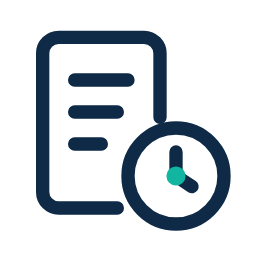
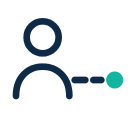
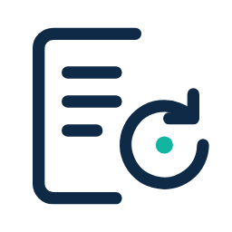
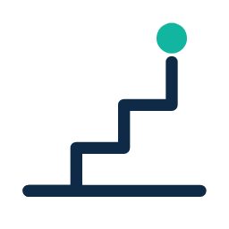
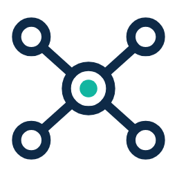
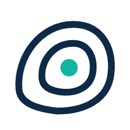
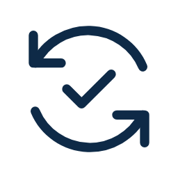

Documentar à mão toma tempo demais.
Semanas entre entrevistas, prints e planilhas para montar um manual que já nasce atrasado.
Documentação viva de processos
A Trilha documenta os processos da sua empresa a partir das ferramentas que vocês já usam e mantém tudo atualizado.
Grátis para começar. Sem cartão.
O problema
Não falta conhecimento. Falta um lugar onde ele fique claro, atualizado e acessível.

Semanas entre entrevistas, prints e planilhas para montar um manual que já nasce atrasado.

Quando uma pessoa-chave deixa a empresa, o contexto do trabalho vai junto — e o time fica sem referência.

Word, PDF e planilhas viram versões soltas. Ninguém sabe qual está valendo.

Cada onboarding vira uma rodada de perguntas para quem já está no limite.
Como funciona
Sem projeto de seis meses. A Trilha parte do que sua equipe já faz todos os dias.

Notion, Slack, Teams, ClickUp e Trello. Leva minutos e não muda a rotina do time.

Etapas, responsáveis e exceções são identificados a partir das conversas e tarefas. O processo já nasce documentado.

Tudo fica na biblioteca, com controle de versões. Quando o processo muda nas ferramentas, a Trilha acompanha.
Para quem
Para empresas em crescimento que precisam padronizar o que já funciona sem desacelerar o time.
Para consultorias que querem escalar o atendimento sem refazer o acervo a cada cliente.
Integrações
Conecte onde o trabalho acontece. Sem migração e sem mudar a rotina da equipe.
Documentação
Comunicação
Comunicação
Documentos e agenda
Gestão de tarefas
Gestão de tarefas
A Trilha complementa essas ferramentas. Não é gestão de projetos, chatbot de atendimento nem substitui um consultor.
O que fica
Planos
R$ 0
3 processos ativos
R$ 390 /mês
Até 25 processos ativos
R$ 990 /mês
Até 100 processos ativos
Sob consulta
Processos ilimitados
Um espaço por cliente, entregáveis com a marca da sua consultoria e entrega do acervo ao cliente no fim do projeto.
Sob consulta
Seja parceiroProcesso ativo = um processo na sua biblioteca, com POP, fluxograma e todas as versões. Leitores ilimitados em todos os planos. Plano anual com 2 meses grátis.
Segurança
A Trilha protege os dados da sua empresa em trânsito e em repouso. Você decide quem acessa cada processo e acompanha o histórico de alterações.
Conformidade com a LGPDContato
Conte o que você quer documentar primeiro. A gente entra em contato para entender o contexto e mostrar o caminho.
Você conta qual processo quer tirar da cabeça das pessoas.
Entendemos seu contexto em uma conversa curta.
Você recebe acesso e documenta o primeiro processo grátis.